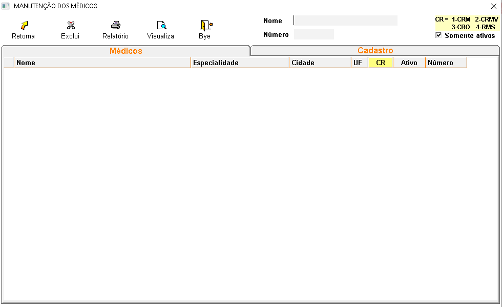

É o profissional autorizado pelo estado para exercer a Medicina. Se ocupa da saúde humana e/ou animal, prevenindo, diagnosticando, tratando e curando as doenças.[cite: 4]
+Qual o procedimento para cadastrar médicos?
No sistema:
- Clique em novo e informe o CRM, nome, especialidade, cidade, UF, CR.[cite: 4]
- OBS.: as informações sobre cada campo, estão no final da página.[cite: 4]
+Como alterar os dados de um médico?
- Digite o nome do médico e tecle ENTER, faça as alterações e tecle ENTER até a proxíma linha para salvar.[cite: 4]
+É possível excluir um cadastro de um médico?
- Sim, mas deve-se atentar aos seguintes detalhes:[cite: 4]
- Se tiver receitas associadas a esse médico, a exclusão não será permitida.[cite: 4]
+Descrição dos campos:

- CRM: Informe o numero da carteira de identidade médica.[cite: 4]
- Nome: Informe o nome do médico.[cite: 4]
- Especialidade: Informe a especialidade do médico. Exemplo: Clínico geral.[cite: 4]
- Cidade: Informe a cidade do médico.[cite: 4]
- UF: Informe o estado do médico.[cite: 4]
- CR: Informe 1- Médicos 2- Veterinario 3- Ondonto 4- Médicos estrangeiros.[cite: 4]